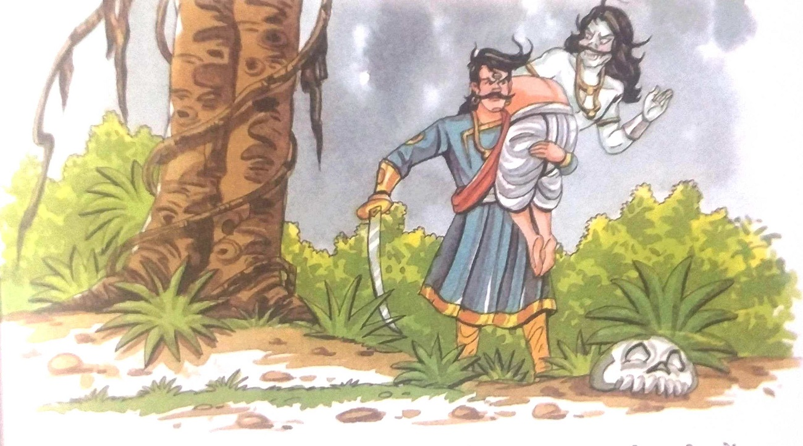

૯-દેવશોમનો પુનર્જન્મ

ચારે તરફ ગાઢ અંધારું હતું. આકાશ વાદળોની પાછળ છુપાયેલું હતું. સમયાંતરે ઝરમર ઝરમર પણ
વરસી રહ્યું હતું. સમયાંતરે વીજળી પડવાથી ક્ષણભર માટે અંધકાર છવાઈ જતો. ફરી એક વાર રાજા વિક્રમ
હાથમાં ચમકતી તલવાર લઈને તે વડના ઝાડ તરફ આગળ વધ્યા જેના પર મૃત શરીર ઝૂલતું હતું. તે નિશ્ચયપૂર્વક
તે ઝાડ પર પહોંચ્યો, મૃતદેહને નીચે ઉતાર્યો, તેને તેના ખભા પર મૂક્યો અને ત્યાંથી પાછો ફરવા લાગ્યો.
પછી વેતાલાએ તે મૃતદેહમાં પ્રવેશ કર્યો અને કહ્યું, "હે બહાદુર રાજા! તમે આ અશક્ય
કાર્યને પૂર્ણ કરવા માટે ઘણા કલાકોથી પ્રયાસ કરી રહ્યા છો. મને ખબર નથી કે તમારો હેતુ શું છે. હવે આ
નવી વાર્તા ધ્યાનથી સાંભળો, પણ ચેતવણી પણ યાદ રાખો.
વેતાલાએ તેની વાર્તા કહેવાનું શરૂ કર્યું-
ઘણા સમય પહેલા, કલિંગ સામ્રાજ્ય ઘણા નાના પ્રદેશોમાં વહેંચાયેલું હતું. તેમની વચ્ચે
શોભાવતી નામનું રાજ્ય પણ હતું. રાજા પ્રદ્યુમ્ન ત્યાંનો શાસક હતો. એ જ પ્રદેશમાં એક બ્રાહ્મણ હતો
જેને દેવશોમ નામનો સોળ વર્ષનો પુત્ર હતો. દેવશોમ ખૂબ જ આશાસ્પદ અને તેજસ્વી હતો. એકવાર તે ગંભીર
રીતે બીમાર પડ્યો અને મૃત્યુ પામ્યો. તેમના માતા-પિતા તેમના પુત્રના મૃત્યુથી ખૂબ જ દુઃખી હતા.
દેવશોમના મૃતદેહને જોઈને આખું ગામ શોકમાં ગરકાવ થઈ ગયું હતું. લોકો બધે રડતા હતા. એવું લાગતું હતું
કે દેવશોમ બધાનો પ્રિય છે.
જ્યારે લોકો દેવશોમના મૃતદેહને સ્મશાનગૃહ તરફ લઈ ગયા તો તેમના રડવાનો અવાજ વધુ વધી ગયો.
એક સાધુ તેના ધ્યાન માં ઊંડે સુધી મગ્ન હતા. લોકોને રડતા સાંભળીને તેનું ધ્યાન તૂટી ગયું. તેણે
સ્મશાનયાત્રા પસાર થતી જોઈ. ઘણા લોકો શોક મનાવી રહ્યા હતા.
તેમની નજીક જઈને તેણે પૂછ્યું, “તમે લોકો આટલા ઉદાસ કેમ દેખાય છે?
એક દિવસ બધાએ મરવાનું છે અને શરીર છોડીને ભગવાન પાસે જવું છે. " તે પછી સંતે મૃતદેહ તરફ
જોયું. પહેલા તો તે જોરથી રડવા લાગ્યો પછી જોરથી હસવા લાગ્યો. આ પછી તેણે કેટલાક પવિત્ર મંત્રનો પાઠ
કર્યો અને પછી તેનો આત્મા શરીર છોડીને અગ્નિસંસ્કાર માટે ત્યાં પડેલા દેવશોમાના શરીરમાં પ્રવેશ્યો.
અચાનક દેવશોમના શરીરમાં આંચકો લાગ્યો અને તે જીવતો ઊભો થઈ ગયો. ત્યાં આટલા બધા લોકોને એકઠા થયેલા
જોઈને તે આશ્ચર્યચકિત થઈ ગયો.
ત્યાં હાજર દરેક વ્યક્તિ છોકરાને જીવતો જોઈ ખુશ થઈ ગયો. દેવશોમના પિતાની ખુશીની કોઈ
સીમા નહોતી. તેણે આ ચમત્કાર માટે ભગવાનનો આભાર માન્યો. દેવશોમના પિતાએ કહ્યું, "આવ, મારા પુત્ર.
ચાલો ઘરે જઈએ. તારી માતા તને જીવતી જોઈને ખૂબ ખુશ થશે. ભગવાન મહાન છે." પછી બધા પોતપોતાના ઘરે પાછા
ફર્યા. દેવશોમાને તેના પિતા સાથે પાછા ફરતા જોઈને તેની માતા આનંદથી દોડી આવી અને તેને ગળે લગાવી.
પરંતુ દેવશોમ તે જગ્યાને ભૂલી શક્યા નહીં જ્યાં વૃદ્ધ ઋષિ રહેતા હતા. માતા-પિતા પાસેથી
અનુમતિ લીધા પછી, તેણે તે જ સ્થાન પર ધ્યાન કરવાનું શરૂ કર્યું જ્યાં ઋષિએ તેનું શરીર છોડી દીધું
હતું.
આટલું કહ્યા પછી વેતાલાએ કહ્યું, "હે રાજા! ઋષિ પહેલા કેમ રડ્યા અને પછી હસ્યા તે મને
કહો. મને સાચું કહો, નહીં તો હું તમારું માથું કાપી નાખીશ." બેતાલ કુતૂહલથી રાજા વિક્રમાદિત્ય સામે
જોવા લાગ્યો.
રાજા વિક્રમે ઝડપથી જવાબ આપ્યો, "હું શું કહું, બેતાલ. તે એક સરળ બાબત છે. ઋષિ પહેલા
રડ્યા કારણ કે તે શરીરને છોડી દેવા જઈ રહ્યા હતા જે તેના માતાપિતાએ એક સમયે પ્રેમથી પોષણ કર્યું
હતું અને જેના દ્વારા તેણે પોતે વિશાળ જ્ઞાન મેળવ્યું હતું. પાછળથી તે હસ્યો કારણ કે હવે તે એક નવા
શરીરમાં પ્રવેશવા જઈ રહ્યો હતો જેના દ્વારા તે વધુ જ્ઞાન અને શાણપણ પ્રાપ્ત કરશે."
બેતાલને રાજા વિક્રમનો જવાબ સાચો લાગ્યો.
રાજા વિક્રમ, તમે ચોક્કસપણે એક બહાદુર અને જ્ઞાની શાસક છો. પણ હવે હું જતો રહ્યો છું કારણ કે તેં
મૌન રહેવાનું વચન તોડ્યું છે.” આટલું કહીને બેતાલ તેના ખભા પરથી ઉડી ગઈ.પહેલાની જેમ ઉડીને તે ફરી એક
વાર ઝાડ પર પડ્યો અને લટકી ગયો.
તેને વિશ્વાસ હતો કે રાજા વિક્રમ ચોક્કસપણે તેનું અનુસરણ કરશે. રાજા વિક્રમે ફરી એકવાર પોતાની તલવાર
કાઢી, આગળ જોયું અને ઝાડ તરફ પ્રયાણ કર્યું.
|